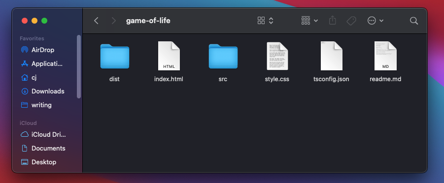

This is a quick and dirty guide to help you serve a website on IPFS. Specifically from a domain where the DNS is controlled by Google. My domain (cjpais.com) is a Google Domain and I struggled with some of the steps.
The first thing you will want to do is gather the files you want to host.
This could come from a SSG like Hugo, a React App that you've written,
or perhaps like me, just a pure HTML/JS/CSS page. In any case you
will have some index.html which will be the root of what you serve.
 This is what my directory looks like.